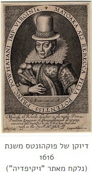
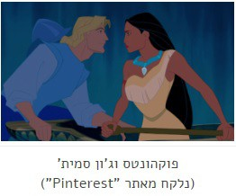

פוקהונטס הוא סרט האנימציה ה-33 של חברת וולט דיסני והוא סרט האנימציה הראשון של דיסני המבוסס על דמות היסטורית אמיתית, אינדיאנית בשם פוקהונטס.
פילמוגרפיה
הופק בידי: ג'יימס פנטקוסט
מבוסס על: פוקהונטס, דמות היסטורית אינדיאנית אמיתית
בימוי: מייק גבריאל ואריק גולדברג
תסריט: קארל בינדר, סוזאנה גראנט ופיליפ לזבינק
עריכה: לי פטרסון, מארק הסטר וג'יימס מלטון
מוזיקה: אלן מנקן וסטיבן שוורץ
צילום: אנדריאס דיג'ה
מדינה: ארצות הברית
חברת הפקה: אולפני ההנפשה של וולט דיסני
חברה מפיצה: חברת וולט דיסני
הקרנת בכורה: 23 ביוני 1995
סוגה: רומנטי, ביוגרפי, מוזיקלי, דרמה קומית, מונפש מסורתית, פנטזיה
משך הקרנה: 72 דקות
פרסים: פרס אוסקר לפסקול המקורי הטוב ביותר לקומדיה או מחזמר
סרט המשך: פוקהונטס 2: מסע לעולם חדש
תקציר העלילה וההבדל מהמקור
פוקהונטס הוא הסרט הראשון של דיסני שמבוסס על דמות היסטורית אמיתית. פוקהונטס האמיתית הייתה אינדיאנית שנחשבת לנסיכה בתרבות הפופולרית, בתו של פאּוהאטאן המנהיג האינדיאני של השבטים שהתיישבו בג'יימסטאון שבווירג'יניה. שנת לידתה לא ידועה לגמרי אבל לפי מחקרים היא נולדה סביב שנת 1595. במעשיות היסטוריות מסופר שהיא הצילה את חייו של שבוי אנגלי בשם ג'ון סמית', מתיישב אנגלי שהגיע לג'יימסטאון ב-1607, על ידי הצמדת ראשה לראשו כשאביה עמד להוציאו להורג ולערוף את ראשו.
פוקהונטס נתפסה בידי האנגלים במהלך פעולות האיבה האנגליות-אינדיאניות ב-1613, והוחזקה למטרות כופר. במהלך השבי, היא עברה תהליכי התנצרות ואימצה את השם רבקה. כשניתנה לה ההזדמנות לחזור אל אנשיה היא בחרה להישאר עם האנגלים. באפריל 1614, היא נישאה לג'ון רולף האנגלי (האיש שפיתח את ענף הטבק), ובינואר 1615 ילדה לו בן בשם תומאס רולף. נישואיה של פוקהונטס היו הנישואים הבין-גזעיים הראשונים שתועדו בהיסטוריה הצפון-אמריקאית. בשנת 1616, משפחת רולף נסעה ללונדון. פוקהונטס הוצגה לחברה האנגלית כדוגמה ל"פרא" מתורבת בתקווה לעודד השקעות בהתיישבות בג'יימסטאון. באנגליה היא הפכה למפורסמת והיללו אותה. במרץ 1617, רולף ופוקהונטס עלו על ספינה לחזור לווירג'יניה; הספינה שטה עד לנהר בגרייבסנד כשפוקהונטס הפכה לחולה באופן חמור. היא נלקחה לחוף ומתה בידיו של ג'ון רולף בגיל עשרים ושתיים. לא ידוע מה הביא למותה, אבל סבורים שחלתה באבעבועות שחורות, דלקת ריאות, או שחפת, או שהורעלה.
הסרט של דיסני מדבר על אותה התקופה אבל הסיפור שונה. בשנת 1607, אונייה של מתיישבים בריטים של חברת וירג'יניה מפליגה ל"עולם החדש". על האונייה נמצאים קפטן ג'ון סמית' והמנהיג של המסע, המושל רטקליף, שמאמין כי האינדיאנים המקומיים מסתירים המון זהב ורוצה לקחת אותו לעצמו. האונייה נתפסת בסערה, וסמית' מציל צעיר חסר ניסיון בשם תומאס מטביעה. מאוחר יותר מודה סמית' שאין לו עניין ב"עולם החדש".
בשבט מקומי בעולם החדש, פוקהונטס, בתו של הצ'יף פוואהטאן, מפחדת להתחתן עם קוקואם, לוחם אמיץ שנראה בעיניה כ"רציני" לעומת האופי הצעיר שלה. צ'יף פוואהטאן נותן לפוקהונטס את השרשרת של אימה במתנה. פוקהונטס, יחד עם חבריה, דביבון זללן בשם מיקו ויונק דבש בשם פליט, מבקרת את סבתא רבתא שלה, שרוחה כלואה בעץ ערבה, והיא מספרת לה על הגעתם של הבריטים. רטקליף מקים מצודה בקרחת היער, קורא לה ג'יימסטאון ומזרז את אנשי הצוות לחפור בשביל למצוא זהב.
סמית' יוצא לחקור את היערות, ובסופו של דבר נתקל באינדיאני במפלים. בהתחלה הוא חושב להרוג אותו, אבל נעצר לפתע כשהוא רואה מולו אישה מסתורית – את פוקהונטס. השניים התחברו מהר מאוד ועל אחד מהם היה מוקסם מעולמו של האחר. השניים מתאהבים ופוקהונטס מפרה את הוראותיו של אביה להתרחק מהבריטים לאחר שקוקואם ולוחמים אחרים נלחמים איתם. פוקהונטס מציגה את סמית' לסבתה. עם זאת, חברתה של פוקהונטס, נאקומה, מגלה את יחסיה עם סמית' ומזהירה את קוקואם. תומאס עוקב גם אחרי סמית', וגם הוא וגם קוקואם רואים את השניים מתנשקים.
בפרץ של קנאה, קוקואם תוקף את סמית' ומנסה להרוג אותו אבל נהרג בעצמו נהרג על ידי תומאס שבורח משם. סמית' נתפס בידי שבט האינדיאנים והצ'יף הזועם מחליט להוציא אותו להורג בזריחה ולהתחיל מלחמה עם המתיישבים הבריטים. תומאס מזהיר את אנשי הצוות על תפיסתו של סמית', ורטקליף מכנס את הגברים לקרב כדי להביס את השבט ולמצוא את הזהב שלהם שלא באמת קיים. פוקהונטס הולכת לסבתה ומיקו מוסר לה מצפן שמכוון אותה לסמית'. היא מוצאת את סמית' רגע לפני שהוצא להורג ומחבקת את ראשו במטרה לעצור את אביה ומצליחה. רטקליף מנסה לירות בצ'יף פוואהטאן וסמית' קופץ להגן עליו וחוטף את הכדור במקומו. המושל נתפס ונעצר על ידי אנשי הצוות. בסופו של דבר, סמית' נאלץ לחזור הביתה כדי לקבל טיפול, פוקהונטס וצ'יף פוואהטאן מברכים אותו שיחזור בעתיד.
אפיון דמויות
פוקהונטס (הנסיכה)
פוקהונטס היא נסיכה אינדיאנית בת 18, היא בעלת צבע עור כהה, עיניים שחורות ושיער שחור ארוך, לובשת שמלה אינדיאנית ועונדת את השרשרת של אימה. היא נולדה וגדלה בשבט שלה שבורג'יניה שבארצות הברית בתקופת האינדיאנים.
ייצוג הנשים: למרות שבמקור מתוארת כילדה בת 12 טיפונת מלאה בסרט של דיסני מופיעה בדמות של אישה בוגרת וסקסית. פוקהונטס מתוארת כאישה הרפתקנית ואוהבת טבע שעומדת על שלה והולכת בעקבות הלב שלה. היא מוצגת כצעירה אצילה, עצמאית ורוחנית מאוד. היא מציגה חוכמה מעבר לגילה וחביבה לסובבים אותה. בסרט היא מוצגת כבעלת כוחות שאמאניים, מאחר שהיא מתקשרת עם הטבע, משוחחת עם רוחות, מבינה את בעלי החיים ומבינה שפות שאותן לא למדה מעולם. פוקהונטס לא מאמינה שלהתחתן יגשים את הרצונות שלה ולכן מפחדת להתחתן עם קוקואם, לוחם אמיץ שבעינייה נתפס כ"רציני" לעומת האישיות הנמרצת שלה, למרות שכך קבע אביה הצ'יף.
התפתחות הדמות: לאורך כל הסרט פוקהונטס מוצגת כאישה פמיניסטית, היא עומדת על שלה ופועלת לפי איך שהיא מוצאת לנכון, היא מסרבת לעשות דברים שלא מתאימים לה ויחד עם זאת נפתחת לעולמות חדשים שלא הכירה לפני.
ג'ון סמית' (הגיבור האנגלי)
ג'ון סמית' הוא מנהיג של אוניית המתיישבים הבריטית. הוא גבר שרירי וחזק, בעל שיער בלונדיני ועיניים כחולות, לובש חולצה בצבע תכלת ומכנסיים כחולים ונושא עימו קסדה. סמית' מתואר כגיבור במלא מובן המילה, הוא מסכן את חייו ופועל למען אחרים, הוא מאוד נחוש בדעתו ומקריב את חייו למען הצדק. הוא היחידי מבין המתיישבים הבריטים במושבה "ג'יימס טאון" שמוכן להתיידד עם הילידים בזכות האהבה שבו והלב הטוב שלו ולומד לקבל תרבויות אחרות מפוקהונטס. סמית' הוא מושא אהבתה של פוקהונטס, הוא הואשם בהריגת קוקואם ונגזר עליו עונש מוות, לולא פוקהונטס שהצילה את חייו הוא היה מת.
ניתוח מגדרי וייצוג נשים
מעמד האישה: פוקהונטס מציגה את האישה כדמות חזקה, חופשייה ועצמאית, היא לא הולכת בדרך שלא מתאימה לה ומשפיעה לטובה על כל הסובבים אותה.
התנהגות: פוקהונטס חיה בזכות עצמה, היא סומכת על ההחלטות שלה ופועלת לפיהן. היא לא מוותרת על המטרה שלה ולא מקשיבה לאף אחד שאומר לה לעשות משהו מנוגד לתחושות שלה. פוקהונטס היא אישה חזקה מאוד כך חונכה מלידה להיות עצמאית וחזקה , היא מוכנה להסתכן למען העקרונות שלה וכשאביה מתכנן לפגע באנגלים היא מודיעה על כך לג'ון סמית' אהובה כדי להציל אותו ואת אנשיו מהמוות הצפוי להם.
תלות באחרים: התלות יחידה של פוקהונטס היא בסבתא שלה. היא מקשיבה לה, סומכת עליה ועל העצות שלה ופועלת לפיהן. חוץ מסבתה פוקהונטס תלויה רק בעצמה והולכת, כמו שהיא אומרת, "לאן שהרוח תיקח אותי".
הסרט פוקהונטס מביא לידי ביטוי את העובדה שאישה של העידן החדש היא אישה עצמאית ומכריז על הכרה של סרטי דיסני בנשים חזקות פעילות ואמיצות שלא מפחדות ללכת נגד הזרם, להילחם עבור העקרונות שלהן ולפעול לפי רצונן האישי גם כשזה נוגע לחתונה. פוקהונטס כדמות מחנכת את הקהל הצעיר לא רק לערכים של שלום, שוויון, אחדות ואחווה אלא גם לערכים פמיניסטים לפיהם אישה יכולה לפעול כרצונה מבלי להתחשב בשום דבר ובאף אחד.
קשר לדמות גבר: פקהונטס וג'ון סמית' סיפור אהבה אמיתי ומרגש. פוקהונטס נסיכת האינדיאנים וג'ון סמית' בין טובי הצוות שהפליגו לוירג'יניה להילחם באינדיאנים. ג'ון סמית' שהלך לחקור את השטח שם פגש לראשונה את פוקהונטס ובמקום להרוג אותה התאהב בה. ככה ממבט ראשון, כך מתפתח סיפור האהבה של פוקהונטס וג'ון סמית' סיפור אהבה אסורה בין שני אנשים שאמורים להיות אויבים. פוקהונטס בשונה משאר הנסיכות אינה נשלטת כלל בידי הנסיך שלה, הסרט נגמר שסמית' חוזר לאנגליה דבר מעצים את עצמאותה ואת חוסר התלות שלה בגבר כנסיכה , למרות שאהבה אותו היא חזקה מספיק כדי להמשיך להתמודד עם הכול גם בלעדיו.
עצמאות: פוקהונטס היא אחת הנסיכות היותר עצמאיות של דיסני, למרות שהיא מקבלת פקודות מדמות גבר (אביה) היא נוהגת להפר אותן כאשר הן נוגדות את העקרונות שלה ואת דרכי הפעולה שלה, היא פועלת בחופשיות לפי השיקולים שלה והיא רואה לנגד עיניה את טובת הכלל , פוקהונטס היא נסיכה לוחמת שנלחמת למען השלום בעולם והיא עושה זאת בגבורה ובעצמאות.
על פניו "פוקהונטס" הוא סרט מוצלח, סוף סוף הדמות הראשית היא אישה ממוצא מיוחד ושונה משאר הנסיכות, סרט שמעודד אישה להיות עצמאית ולא תלויה לגמרי בגבר. יחד עם זאת, כמו תמיד, לא כל הביקורות על הסרט מזהירות. סיפור המסגרת בסרט נכון בחלקו, אבל הפרטים הקטנים שגויים ולעתים מעוותים לגמרי. הדמויות של פוקהונטס ושל ג'ון סמית' מפוברקות כמעט לגמרי. כפי שזה נראה המטרה העיקרית של דיסני הייתה לכופף את האמת על-מנת לקלוע לטעם הקהל של ימינו. מבחינה ויזואלית, השניים לא דומים בכלל לדמיות המצויירות שלהם. סמית' האמיתי היה נמוך, ג'ינג'י ומזוקן. פוקהונטס הייתה אז בערך בת 12, מלאה, ורחוקה מאד מהדמות הסקסית שניסו להדביק לה בדיסני.
המסקנה שעולה מן ההשוואה פשוטה: לכל מי ששלח בזמנו את ילדיו לראות את הסרט המצוייר, רצוי מאד שיושיב אותם הערב לראות את הגרסה התעודית. שילמדו, לצד שיעור בהיסטוריה, גם כמה עובדות מדאיגות על אמת בפרסום. באתר האינטרנט של שבט הפוואטאן כתבו בני השבט כי "ההצעות שלנו לסייע לרוי דיסני, מפיק 'פוקהונטס', בעניין הדיוקים ההיסטוריים והתרבותיים, נדחו". באתר הם מגדירים את פוקהונטס כמי שנחשבה ל"אנדיאנית הטובה" של הלבנים, וטוענים כי דיסני עשה שימוש מכוון בעיוותים היסטוריים. מתברר שיש לא מעט אמת בדבריהם.
דילמה לדיון: אמת היסטורית מול סיפור טוב
הדילמה של יוצרי סרטים היסטוריים:
יוצרי "פוקהונטס" בחרו לשנות את העובדות ההיסטוריות (גילה של פוקהונטס, סיפור האהבה שלא היה) כדי ליצור סרט מצליח ומושך לקהל המודרני. האם מותר לעוות את ההיסטוריה כדי להעביר מסרים חיוביים (כמו פמיניזם ושלום) וליצור בידור טוב?
- כיבוד האמת והמורשת של הדמויות האמיתיות.
- חינוך נכון ומדויק לדור הצעיר.
- מניעת ביקורת מצד הקהילות המיוצגות (השבט האינדיאני).
- הסיפור עלול להיות פחות מעניין או רומנטי.
- פחות פופולריות והכנסות (ילדים רוצים אגדות, לא שיעור היסטוריה יבש).
- יצירת סיפור סוחף ומרגש שפונה לקהל רחב.
- הזדמנות להעביר מסרים מודרניים חשובים (פמיניזם, שלום) דרך דמות מוכרת.
- הצלחה כלכלית המאפשרת יצירת עוד סרטים.
- הטעיית הציבור ולימוד היסטוריה שגויה.
- פגיעה ברגשות הצאצאים והתרבות המיוצגת.
- יצירת סטריאוטיפים חדשים (כמו האינדיאנית ה"סקסית").